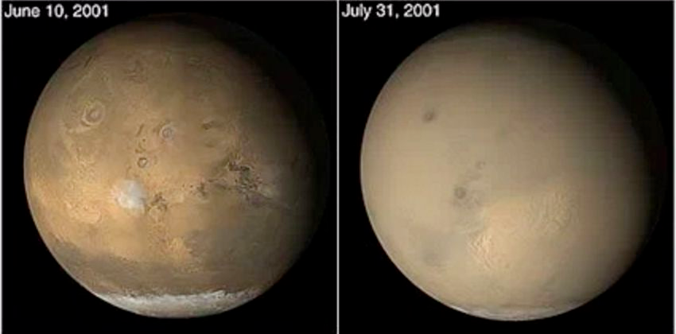
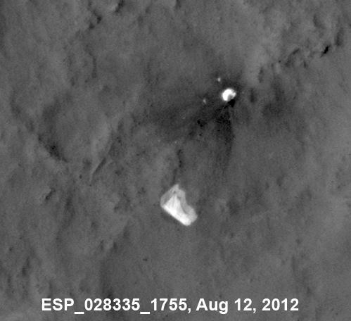
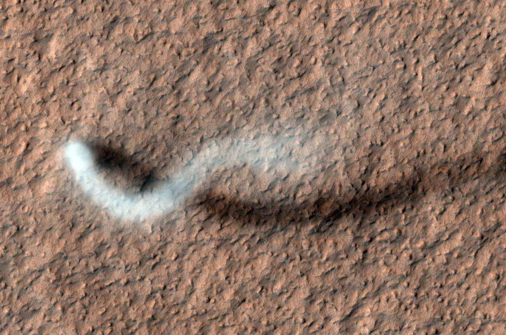
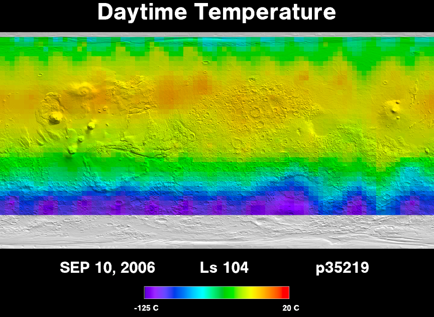
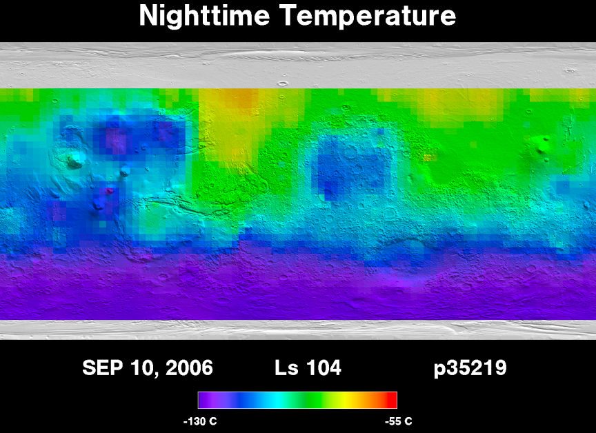
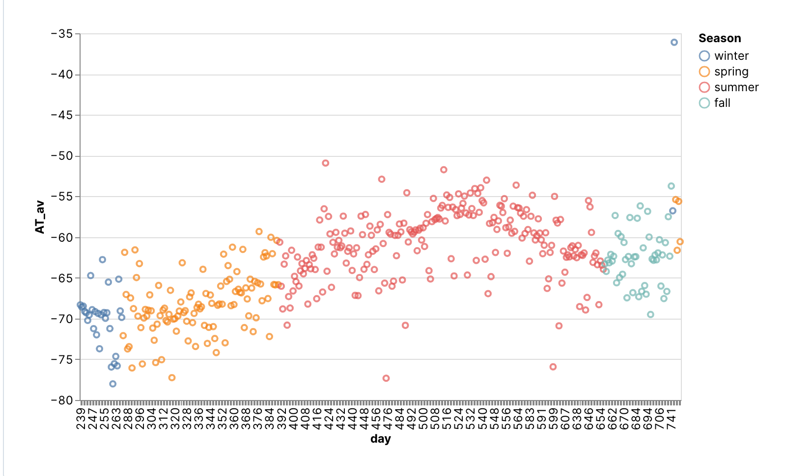

火星天气与气候¤
火星上的风与沙尘暴¤
火星表面的热惯量 （thermal inertia） 很低，很容易被加热。同时火星表面有的区域的热惯量高，有的区域低，所以会形成类似地球的海陆风。
火星风速虽然会很高，但由于气压不高，危害不是很大。不过其所带来的沙尘暴给火星的工程带来一些挑战1：
- 沙尘会覆盖太阳能电池板，降低太阳能效率；
- 沙尘进入机械装置内部。
不过归根结底，沙尘暴的最终动力也是太阳能，所以如果沙尘暴导致阳光无法抵达表面，沙尘暴本身也会降低。

来源：Dust Storms of 2001, Credit: NASA/JPL-Caltech/Malin Space Sciences Systems

来源: PIA16813: MSL's Parachute Flapping in the Wind, Credit: NASA/JPL-Caltech/Univ. of Arizona
HiRISE 拍到的火星上的龙卷风，发生地点是亚马逊平原。

来源：The Serpent Dust Devil of Mars, Credit: NASA/JPL-Caltech/University of Arizona
火星表面气温¤
火星表面昼夜温差很大，季节差异也很大3。
火星上白天的平均气温在太阳直射区域附近，甚至可以达到 20 摄氏度2

火星上夜间的平均气温2

NASA 有几个火星探测器设置了天气“预报”页面，例如 - Perseverance at Jezero Crater, - Curiosity at Gale Crater, - Insight at Elysium Plaitia.
星际移民中心收集了 Insight 探测器，也就是在 Elysium Planitia 附近的温度数据。

来源：自制，代码在此
-
Hille K. The Fact and Fiction of Martian Dust Storms. In: NASA [Internet]. 18 Sep 2015 [cited 15 Jan 2023]. Available: https://www.nasa.gov/feature/goddard/the-fact-and-fiction-of-martian-dust-storms ↩
-
Thermal Emission Spectrometer. In: Mars Global Surveyor - Thermal Emission Spectrometer [Internet]. [cited 15 Jan 2023]. Available: http://tes.asu.edu/ ↩↩
-
H Hargitai. Mars climate zone map based on TES data. In 41st Lunar and Planetary Science Conference, held March 1-5, 2010 in The Woodlands, Texas. LPI Contribution No. 1533, p.1199, 1199. 1 March 2010. URL: https://ui.adsabs.harvard.edu/abs/2010LPI....41.1199H. ↩